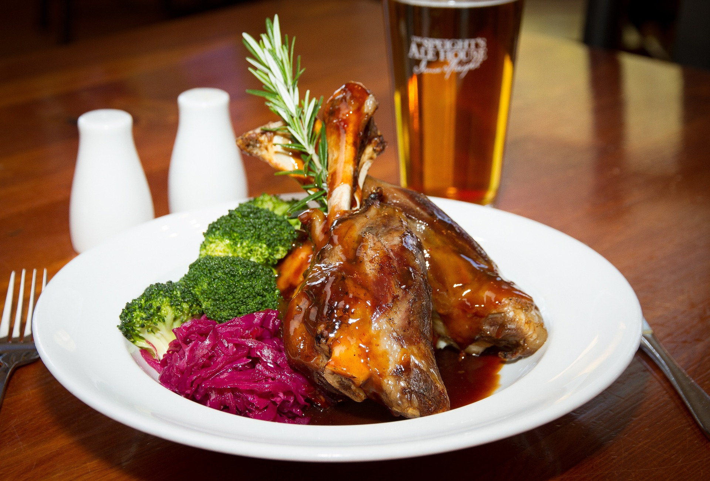

ricetta per agnello
home
titolo lasagne
mozzarelle in carrozza

agello in umido
Quella dell'agnello in umido è una ricetta facile e gustosa, perfetta per il pranzo della domenica, ma anche come secondo piatto da servire durante la Pasqua, da accompagnare con un contorno di verdure fresche di stagione.
La ricetta dell'agnello in umido è una validissima alternativa alla portata di tutti ad altre preparazioni più classiche con la carne di agnello come l'abbacchio alla romana o quello al forno.
Un secondo piatto profumato e di soddisfazione perfetto per un'occasione conviviale con amici o in famiglia oppure da servire durante il pranzo di Pasqua, accompagnato da un bel contorno di verdure fresche.
ingredienti
- 1 kilo e 200 grammi di agnello a pezzi
- 2 carote piccole
- 1 costa di sedano
- 2 cipollotti piccoli
- 1 cucchiaio di concentrato di pomodoro
- 2 spicchi d’aglio
- olio extra vergine d'oliva
- qualche cucchiaio di farina
- 1 bicchiere di vino bianco
- 500 ml di brodo vegetale
- erbe aromatiche (rosmarino, salvia, alloro, menta fresca)
come preparare: agnello in umido
- Per preparare l'agnello in umido, cominciate tagliando il sedano, le carote e i cipollotti a tocchetti e mettete da parte. Posizionate sul tagliere l'agnello tagliato a pezzi.
- Passate nella farina i pezzi uno a uno e metteteli a rosolare in una casseruola con l'olio extravergine d'oliva.
- Togliete l'agnello e lasciatelo da parte. Nella stessa pentola aggiungete sedano, carote e cipollotti e il concentrato di pomodoro. Cuocete per pochi minuti, tempo di far bene insaporire e segnare gli ortaggi. Poi, aggiungete anche l'aglio, un bouquet di rosmarino, salvia e alloro legati con uno spago da arrosto, una presa di sale e una macinata di pepe.
- Bagnate il tutto con il vino bianco e lasciate sfumare. Chiudete con il coperchio iniziando la cottura in umido, idratando di tanto in tanto con il brodo vegetale caldo. Lasciate cuocere a fiamma moderata per 60 minuti circa. Verso fine cottura, interrompete l’idratazione per ottenere un buon compromesso di densità dell’umido.
-
Servite il vostro agnello in umido con qualche fogliolina di menta oppure con un giro d'olio emulsionato con menta fresca, sale e pepe.